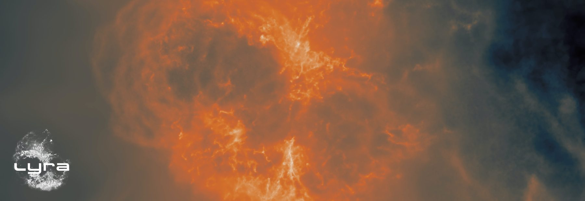
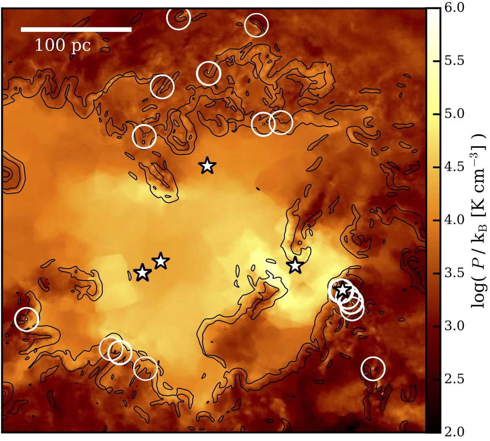
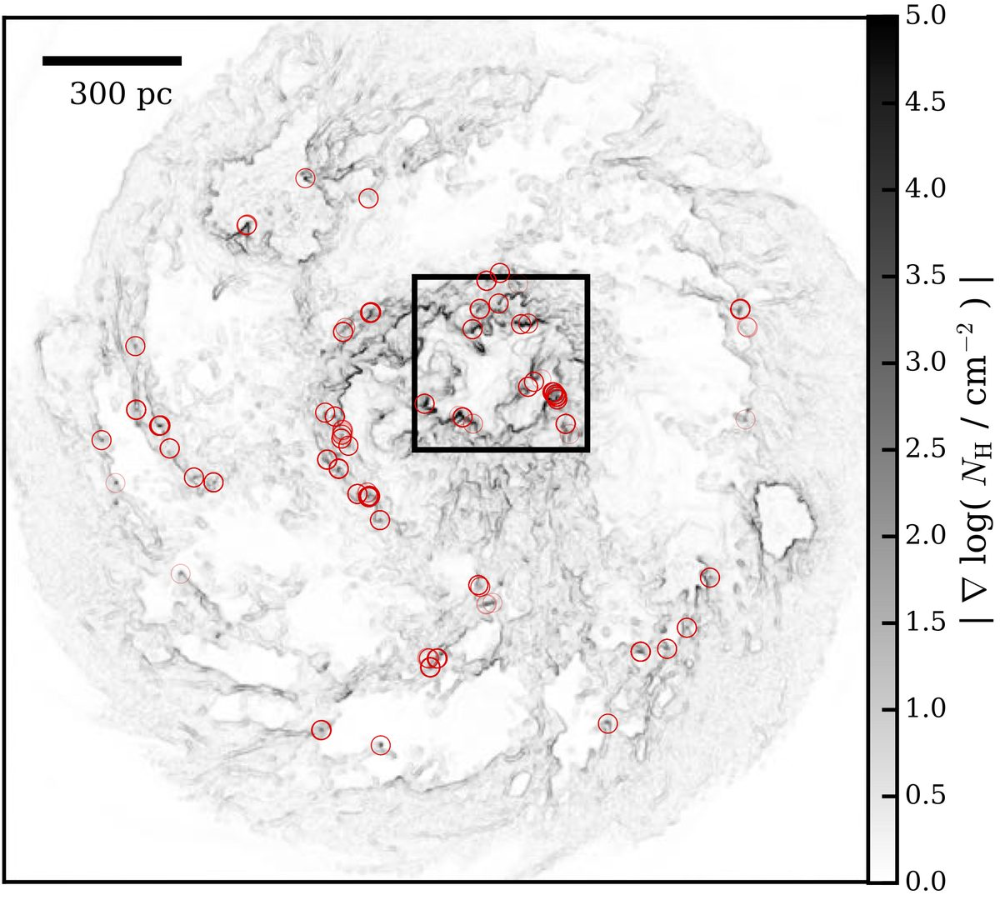
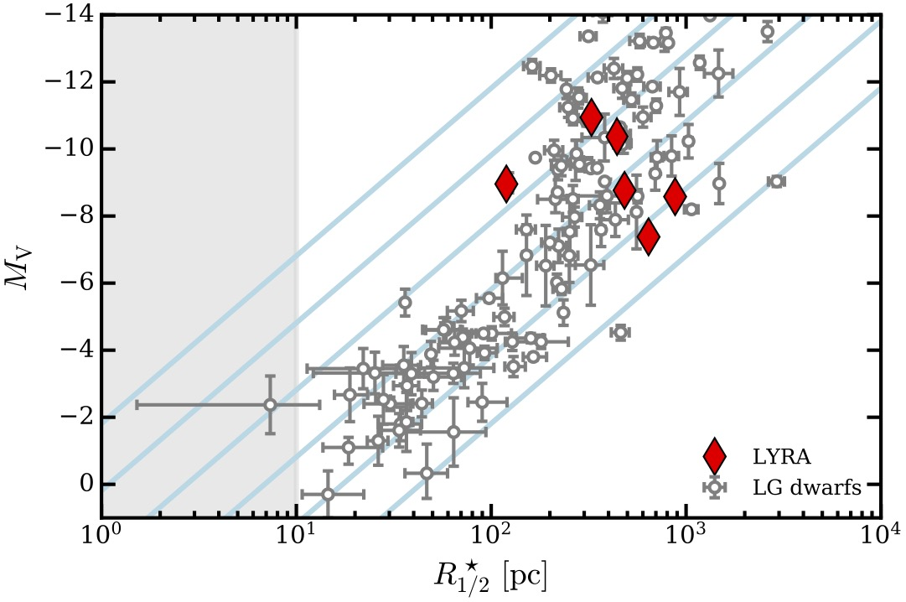
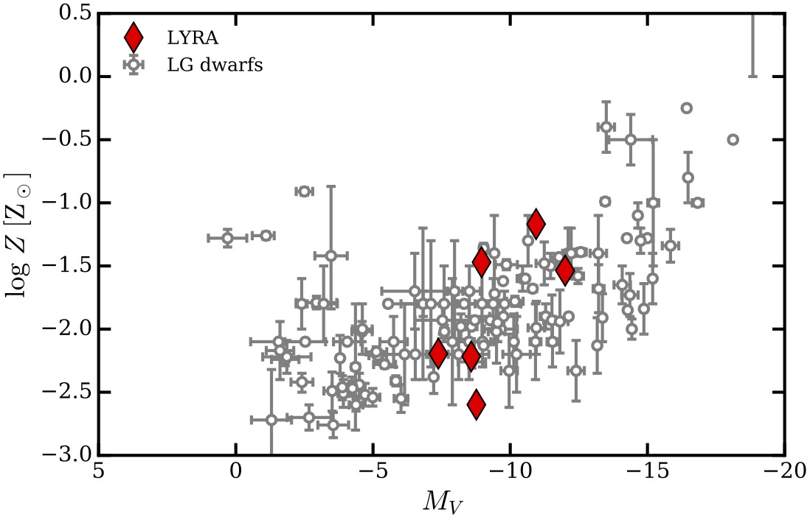

A galaxy formation model that resolves individual stars and supernovae, built for the moving-mesh code AREPO.

The model
I have been developing LYRA since 2019. It follows the interstellar medium in all its phases, down to 10 K. Stars form individually, sampled from the initial mass function, and each one's lifetime and fate is tracked. Every supernova explodes as its own blast wave, with variable energy, inside the hydrodynamic calculation.
At our fiducial resolution of 4 solar masses per gas cell, most supernovae are resolved. Their feedback builds a hot phase in the interstellar medium on its own, drives strong outflows, and regulates star formation. Clustered supernovae turn out to matter most: the majority explode into low-density gas, where they are far more effective.
LYRA makes it possible to run this detailed interstellar medium model directly in cosmological zoom-in simulations of dwarf galaxies and beyond.

Gas pressure around clustered supernovae. Circles mark individual remnants, stars mark young stars.

Shock fronts from overlapping supernova blast waves.
A dwarf galaxy, start to finish
The first cosmological LYRA run (Gutcke et al. 2022) follows a dwarf galaxy in a 2×10⁹ solar-mass halo all the way to the present day. The resulting galaxy matches the stellar mass, size, kinematics and metallicity of Local Group dwarfs, and it shows that where the very first stars form shapes how a dwarf galaxy assembles.

Comparing LYRA galaxies with Local Group dwarfs in size and brightness.

Comparing LYRA galaxies with Local Group dwarfs in brightness and chemistry.
Movies
A 10⁹ solar-mass halo forming along a dark matter filament. Feel free to use these in talks or outreach; please cite Gutcke et al. 2022.
Gas density. Gas collapses along a small filament. Reionization around z≈8 heats the gas in this shallow potential and makes it look fuzzy.Gas metallicity. Halos above 10⁶ solar masses are seeded with the first metals, which the first stars and supernovae then spread around them.Gas temperature. Supernovae twinkle into existence in the densest gas; their hot bubbles expand and merge into one super-bubble.
LYRA was initially developed by Thales A. Gutcke at the Max-Planck-Institute for Astrophysics in Garching with support from Volker Springel, Rüdiger Pakmor and Thorsten Naab.
More recently, some improvements and analysis is being carried out by Azadeh Fattahi's group at Stockholm University. Initial conditions were created at the Institute for Computational Cosmology, Durham University by Adrian Jenkins, Ashley J. Kelly and Azadeh Fattahi.
A varying initial mass function in Milky Way-like galaxies
Zoom-in simulations with a metallicity-dependent IMF show little change in morphology or star formation history, but noticeably different chemical enrichment, with alpha-element trends closer to observations. Paper on ADS
The circumgalactic medium in NIHAO
Hot and cold gas around 86 simulated galaxies across five orders of magnitude in stellar mass, traced by O VI and H I, with predictions for how bipolar outflows shape the halo. Paper on ADS
Quiescent elliptical galaxies
A massive galaxy can become a red elliptical without a sudden quenching event: simply stopping hot gas from cooling moves it across the green valley in about a gigayear. Paper on ADS
 Thales A. Gutcke
Thales A. Gutcke